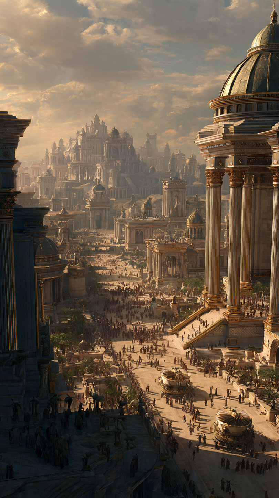

في أرض واسعة بين الرمال والجبال، عاش قوم عُرفوا باسم قوم عاد.
كانوا من أقوى الأمم التي عاشت في زمانهم، وقد أنعم الله عليهم بقوة عظيمة وأجسام قوية وأرض مليئة بالخيرات.
وكانوا يسكنون في منطقة تُسمى الأحقاف، وقد اشتهروا ببناء القصور الضخمة، حتى ذُكرت مدينة إرم ذات العماد التي وصفها القرآن بأنها ذات أعمدة عظيمة.
قال الله تعالى:
"أَلَمْ تَرَ كَيْفَ فَعَلَ رَبُّكَ بِعَادٍ إِرَمَ ذَاتِ الْعِمَادِ الَّتِي لَمْ يُخْلَقْ مِثْلُهَا فِي الْبِلَادِ"
كان قوم عاد يرون قوتهم وعظمتهم، فبنوا المباني العالية، وافتخروا بما لديهم.
لكن مع مرور الزمن، بدأ الغرور يدخل إلى قلوب بعضهم.
نسوا أن هذه القوة كانت نعمة من الله، وظنوا أن ما يملكونه سيجعلهم دائمًا في أمان.
كانوا يقولون:
"من أشد منا قوة؟"
لكن الله أرسل إليهم نبيًا كريمًا هو هود عليه السلام.
جاء هود يدعوهم إلى عبادة الله وحده، وترك الظلم والتكبر.
قال لهم:
"يا قوم، اعبدوا الله ما لكم من إله غيره، واشكروا نعمه ولا تجعلوا قوتكم سببًا للغرور."
لكن كثيرًا منهم رفضوا الاستماع.
نظروا إلى قصورهم وجيوشهم وقالوا:
"كيف نترك ما وجدنا عليه آباءنا؟"
ولم يعلموا أن أعظم قوة في العالم لا تقف أمام أمر الله.
📷 الصورة رقم 1

استمر نبي الله هود عليه السلام في دعوة قوم عاد.
كان يدعوهم بالحكمة واللين، ويذكرهم بأن القوة التي لديهم هي من فضل الله عليهم.
قال لهم:
"تذكروا أن من أعطاكم القوة قادر على أن يأخذها منكم، فلا تجعلوا النعم سببًا للكبر."
لكن بعض قادة قوم عاد رفضوا دعوته.
كانوا يرون أن عظمتهم وقصورهم دليل على أنهم أفضل من غيرهم.
قالوا له:
"لقد جئتنا لتمنعنا عما كان يعبد آباؤنا، ونحن لا نصدق ما تقول."
ومع ذلك، لم يتوقف هود عليه السلام عن نصحهم.
فكان يريد لهم الخير، ويخاف عليهم من عاقبة الطريق الذي يسيرون فيه.
مرت الأيام، وبدأت علامات التحذير تظهر.
تغيرت أحوال الجو، وقلَّت البركة، وبدأ القوم يشعرون بأن هناك أمرًا غير عادي يحدث.
لكنهم بدل أن يرجعوا إلى الله، ازداد بعضهم عنادًا.
وفي يوم من الأيام، رأوا سحابة كبيرة قادمة نحوهم.
فرحوا بها وقالوا:
"هذه سحابة تحمل المطر، سنعود بعدها كما كنا."
لكنهم لم يعلموا أن هذه السحابة لم تكن كما ظنوا.
فقد كانت بداية حدث عظيم سيغير تاريخ قوم عاد إلى الأبد.
أما هود عليه السلام ومن آمن معه، فقد كانوا ينتظرون رحمة الله وحفظه.
📷 الصورة رقم 2
عندما اقتربت السحابة من قوم عاد، لم تكن تحمل المطر الذي انتظروه...
بل كانت تحمل ريحًا شديدة أرسلها الله عليهم.
قال الله تعالى:
"رِيحًا صَرْصَرًا عَاتِيَةً"
استمرت الريح بأمر الله أيامًا وليالي، وكانت شديدة لا يستطيعون مقاومتها.
القوم الذين ظنوا أن قوتهم لا تُهزم، وجدوا أنفسهم عاجزين أمام أمر الله.
اختفت قصورهم، وذهبت قوتهم، وانتهى غرورهم.
ولم يبقَ من عظمتهم إلا ما أخبر الله به في كتابه لتكون قصتهم عبرة للناس.
أما هود عليه السلام والذين آمنوا معه، فقد نجاهم الله برحمته.
فالله لا يضيع من يتمسك بالحق ويؤمن به.
وبقي السؤال عبر التاريخ:
أين اختفت مدينة إرم ذات العماد؟
بحث الناس طويلًا عن آثار قوم عاد، وظهرت قصص وروايات كثيرة عن أماكن محتملة لها، لكن الموقع الحقيقي لإرم كما ورد ذكرها في القرآن ليس معلومًا على وجه القطع.
والأهم من مكان المدينة هو الدرس الذي تركته قصتهم.
فليست العظمة في ارتفاع القصور أو كثرة القوة...
بل في التواضع وشكر الله واستخدام النعم فيما يرضيه.
إن قصة قوم عاد تذكرنا أن الإنسان مهما بلغ من قوة، فهو يحتاج دائمًا إلى الله.
فالغرور قد يجعل صاحب القوة ينسى من أعطاه القوة، وعندها يخسر أعظم ما يملك.
🏜️📖 انتهت القصة 📖🏜️
العبرة:
لا تجعل القوة والنجاح سببًا للكبر، فكل نعمة من الله، والشكر يحفظ النعم.